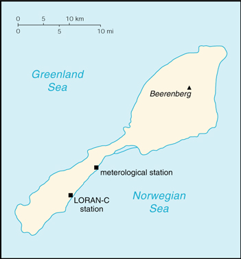

![[Country Flag of Jan Mayen]](../flags/jn-lgflag.jpg)
| Jan Mayen |
|
        |
 | |
| Geography |
Location: Northern Europe, island between the Greenland Sea and the Norwegian Sea, northeast of Iceland
Geographic coordinates: 71 00 N, 8 00 W
Map references: Arctic Region
Area:
total:
373 sq km
land:
373 sq km
water:
0 sq km
Area - comparative: slightly more than twice the size of Washington, DC
Land boundaries: 0 km
Coastline: 124.1 km
Maritime claims:
contiguous zone:
10 nm
continental shelf:
200-m depth or to the depth of exploitation
exclusive economic zone:
200 nm
territorial sea:
4 nm
Climate: arctic maritime with frequent storms and persistent fog
Terrain: volcanic island, partly covered by glaciers
Elevation extremes:
lowest point:
Norwegian Sea 0 m
highest point:
Haakon VII Toppen/Beerenberg 2,277 m
Natural resources: none
Land use:
arable land:
0%
permanent crops:
0%
permanent pastures:
0%
forests and woodland:
0%
other:
100%
Irrigated land: 0 sq km (1993)
Natural hazards: dominated by the volcano Haakon VII Toppen/Beerenberg; volcanic activity resumed in 1970
Environment - current issues: NA
Geography - note: barren volcanic island with some moss and grass
| People |
Population:
no indigenous inhabitants
note:
there are personnel who operate the Long Range Navigation (Loran-C) base and the weather and coastal services radio station (July 2000 est.)
| Government |
Country name:
conventional long form:
none
conventional short form:
Jan Mayen
Data code: JN
Dependency status: territory of Norway; administered from Oslo through a governor (sysselmann) resident in Longyearbyen (Svalbard); however, authority has been delegated to a station commander of the Norwegian Defense Communication Service
Flag description: the flag of Norway is used
| Economy |
Economy - overview: Jan Mayen is a volcanic island with no exploitable natural resources. Economic activity is limited to providing services for employees of Norway's radio and meteorological stations located on the island.
| Communications |
Radio broadcast stations:
AM NA, FM NA, shortwave NA
note:
there is one radio and meteorological station (1998)
| Transportation |
Ports and harbors: none; offshore anchorage only
Airports: 1 (1999 est.)
Airports - with unpaved runways:
total:
1
914 to 1,523 m:
1 (1999 est.)
| Military |
Military - note: defense is the responsibility of Norway
| Transnational Issues |
Disputes - international: none